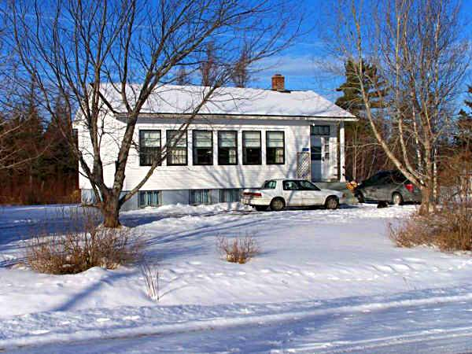

Victoria School

Photo courtesy of Richard MacDougall
Most of the early settlers in Black River spoke Gaelic. Based on the work of A. W. McDougall, Black River and its First Settlers, the first instruction in Black River was provided in a barn belonging to Archibald Cameron, Sr. Following this, teachers provided instruction in their own homes. In 1825, residents petitioned successfully for a school which, as I understand it, was erected near the lane now leading to St. Stephen's Church. This school appears to have served all of Black River and as far east as Bay du Vin although I do not know if students from the north side of the river were included
About 1845, the district was divided with one, the Cameron School, being built at Middle Black River and another at Bayside (now Miramichi). A few years later a school was erected at Little Branch; I do not know when the first Victoria school was erected.
The Victoria School, date of construction unknown, became one of seven schools in the newly created Miramichi Rural High School district in 1939. When the MRHS opened, grades one to six continued at the each of the small schools; the new high school offered instruction in Grades seven through eleven. The original Victoria School burned, probably in the late 1940’s, but was soon replaced. The latter school serves as the residence of Mrs. Louise MacDougall